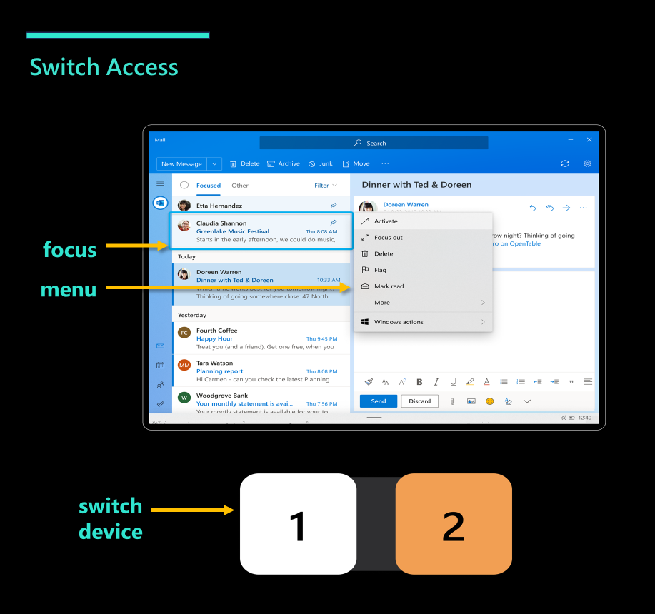

People with limited mobility can struggle to use a traditional keyboard, mouse, or touchscreen. Assistive switches are a class of peripheral devices that allow people with limited mobility to navigate and interact with their computing device. Switch Access was a new assistive technology solution for people with limited mobility to operate Windows.
I drove the project strategy and execution, leading a cross-functional team of 14 members across Redmond and India. I developed and established consensus on a 3-year roadmap of 44 prioritized user scenarios and coordinated semimonthly collaborations with 17 external customers. I also led end-to-end product development for 7 features, which involved conducting market and user research; defining product specifications and requirements; and working cross-functionally to design, develop, and test product changes.
The goal of Switch Access was to ensure that Windows was accessible to people with limited mobility.
Similar to other assistive technology such as screen readers, Switch Access had a focus indicator that showed which element on the screen will be acted upon. A menu showed available actions that users can perform on the focused element. Limited mobility users controlled the focus indicator and menu via a switch device with two assistive switches.

Switch Access enabled limited mobility users to navigate and interact with Windows, to meet compliance standards and unblock device sales for 856K people.
This project showed me that accessibility practices need to consider disabled users' intersectionality and individuality.